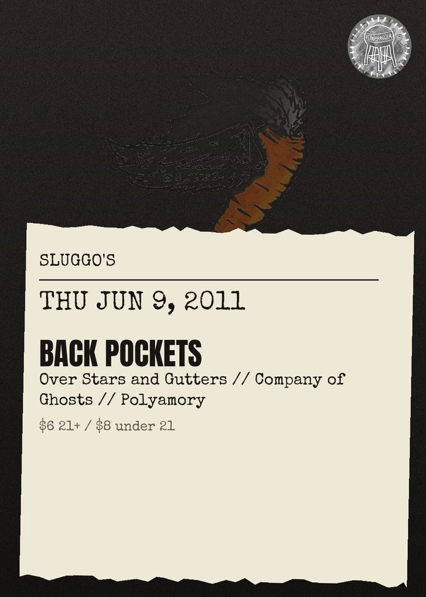

THU JUN 9from the archive
Back Pockets, Over Stars And Gutters, Company Of Ghosts, Polyamory
$6 21+ / $8 under 21
21+
$6 21+\/\/$8 under 21: Back Pockets (experiemntal folk rock from Atlanta), Over Stars and Gutters (punk from Oklahoma City), Company of Ghosts (local folk\/punk), and Polyamory (local band featuring members of Cosmonaut Ploy).